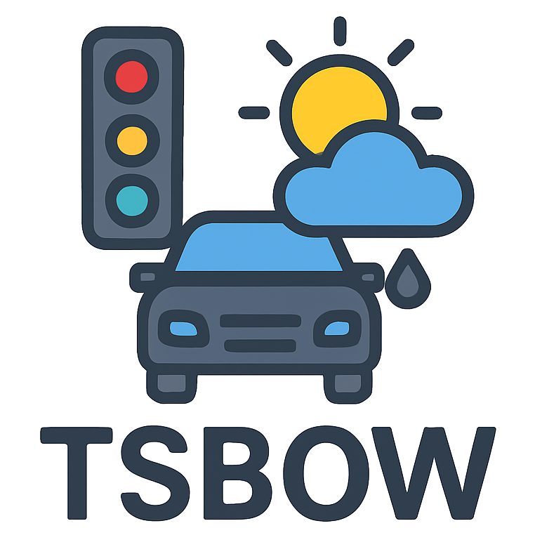

T S B O W
Traffic Surveillance Benchmark for Occluded Vehicles under Various Weather Conditions
SCENES FILTERING
Cite Our Work
If our research is helpful to you, please cite our paper
using the following BibTeX format
@misc{huynh2026tsbowtrafficsurveillancebenchmark,
title={TSBOW: Traffic Surveillance Benchmark for Occluded Vehicles Under Various Weather Conditions},
author={Ngoc Doan-Minh Huynh and Duong Nguyen-Ngoc Tran and Long Hoang Pham and Tai Huu-Phuong Tran and Hyung-Joon Jeon and Huy-Hung Nguyen and Duong Khac Vu and Hyung-Min Jeon and Son Hong Phan and Quoc Pham-Nam Ho and Chi Dai Tran and Trinh Le Ba Khanh and Jae Wook Jeon},
year={2026},
eprint={2602.05414},
archivePrefix={arXiv},
primaryClass={cs.CV},
url={https://arxiv.org/abs/2602.05414},
}